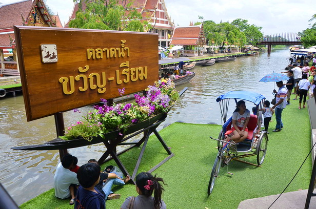

ตลาดน้ำขวัญเรียม ตลาดน้ำขวัญเรียม ถูกสร้างขึ้นจากแนวคิดที่อยากจะจำลองชีวิตของชาวน้ำ เพื่อให้เป็นที่ระลึกแก่คนรุ่นหลัง ให้ได้เรียนรู้ถึงวิถีชีวิตริมน้ำ ทั้งภาพพระที่ออกบิณฑบาตรทางเรือ การทอดผ้าป่าทางน้ำโดยเฉพาะความเป็นมาอันยาวนานของคลองแสนแสบ ที่อยู่คู่กรุงเทพมหานครมาตั้งแต่ต้นกรุงรัตนโกสินทร์ อีกทั้งยังเป็นต้นกำเนิดของนิยายรักอมตะเรื่อง แผลเก่า ที่มีตัวเอกคือ ขวัญ กับ เรียม โศกนาฏกรรมของความรักที่ทุกคนจดจำได้ดี
โดยตลาดน้ำขวัญเรียมนั้น เปิดทำการวันเสาร์-อาทิตย์ และวันหยุดนักขัตฤกษ์ เวลา 6.00 น. ถึง 18.00 น. ตักบาตรพระทางเรือเวลา 7.30 น. ถึง 8.00 น. และ ตั้งอยู่ในวัดบำเพ็ญเหนือและวัดบางเพ็งใต้ ทั้งแบบตลาดน้ำและตลาดในร่ม